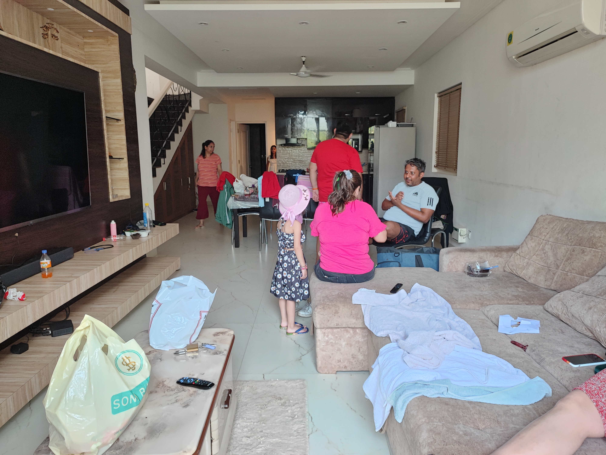
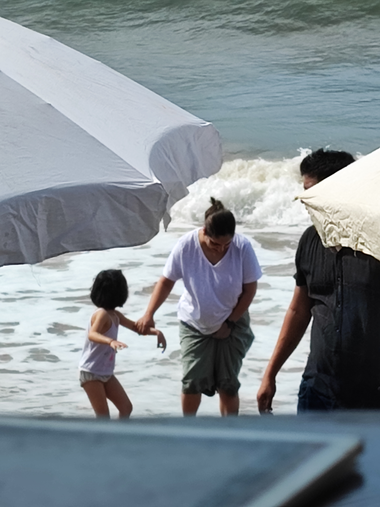

The end of 2022 brought us to the sun-kissed shores of Goa, a place that always feels like coming home, even when we’re thousands of miles away. This trip, though, felt different. It was a proper family affair, a chaotic, joyful gathering of generations, all soaking in the relaxed Goan rhythm. My daughter, usually a bundle of European reserve, transformed into a free spirit, her laughter echoing through every moment.
From the moment we arrived, the vibrant energy of Goa wrapped around us. We found ourselves strolling past quirky street art, each mural more colourful than the last. There's something truly special about seeing my husband hold our little one, both of them beaming in front of such a playful backdrop. It's these candid moments, brimming with pure happiness, that I cherish the most.
Our Goan Home Away From Home
We opted for a villa this time, a sprawling space that quickly filled with the delightful chaos of family. Mornings were slow, filled with the aroma of freshly made chai and the excited chatter of children planning their day. Evenings were for shared meals, card games, and endless stories. It wasn't always picture-perfect – there were clothes strewn about, toys scattered, and the joyful disarray of people truly living in the moment. But that's the beauty of it, isn't it? Real life, real connections.

The days melted into each other, a lovely blur of poolside antics and beach adventures. My daughter, who usually prefers paddling in calmer waters, discovered the thrill of the Goan waves. I remember holding her hand tightly, feeling the cool water rush over our feet, as she giggled with every splash. Her joy was utterly infectious, a reminder to embrace the simple pleasures. My husband, ever the keen photographer, captured this beautiful moment of us playing in the surf, a memory I’ll hold dear forever.

Twilight & Laughter
As the sun dipped below the horizon, painting the sky in fiery hues, Goa took on a different charm. The evenings were for exploring the local shacks and restaurants, their twinkling lights and buzzing energy a stark contrast to the daytime languor. It was a chance for the adults to unwind, to share a drink, and enjoy the Goan nightlife without too much fuss. Watching my husband and his brother, deep in conversation, laughter flowing freely, felt like a perfect encapsulation of the trip – easy, joyful, and filled with warmth.

Leaving Goa felt like bidding farewell to a dream, but the memories we carried back were priceless. This trip, at the close of 2022, wasn't just a vacation; it was a reaffirmation of family bonds, a celebration of simple joys, and a reminder of the magic that unfolds when you truly step away from the everyday. Until next time, Goa. You certainly gave us a December to remember.